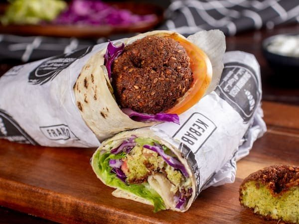
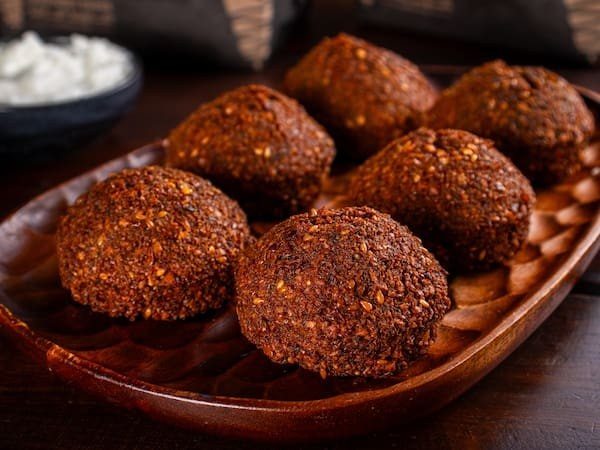
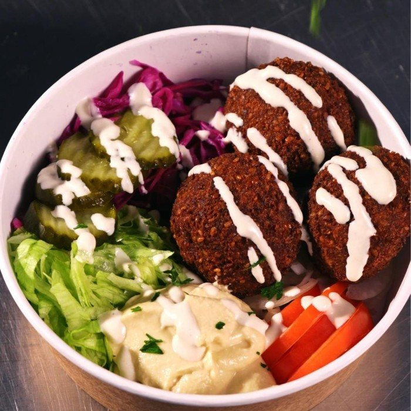
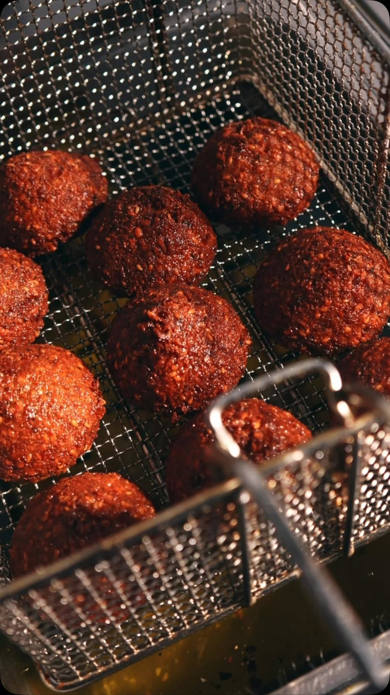
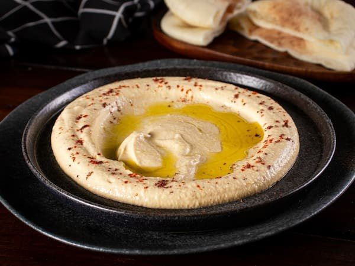

No pão árabeSanduíche Falafel (vegetariano)
Com hommus, salada e tahine.
R$ 35,00Início · Falafel e hommus
O lado vegetariano da casa: falafel no pão árabe, em porção e no bowl, e o hommus em porção de 200 g com pão árabe torrado.
Falafel

Com hommus, salada e tahine.
R$ 35,00
Bolinhos crocantes com molho de alho.
R$ 34,00
Com salada, hommus, tahine e picles.
R$ 41,00
Hommus
“Porção de 200g da nossa tradicional pasta de grão de bico acompanhada pão árabe torrado.” R$ 40,00.
“Destaque para o homus (pasta de grão de bico) e para o pão árabe, feitos por ele.”Reportagem do iBahia, janeiro de 2018

Sem carne
Avise na mensagem do pedido e confirme os ingredientes pelo WhatsApp antes de pedir.
Dúvidas frequentes
Sim, a casa o identifica como vegetariano no sanduíche e no bowl.
Sim: alface americano, repolho roxo, cebola, salsa, tomate, hommus, molho tahine e picles.
Bateu a fome?
Monte o pedido aqui e mande pronto para o WhatsApp da casa, ou venha ao salão. A partir das 17h, todos os dias; confirme o horário de fechamento pelo WhatsApp.